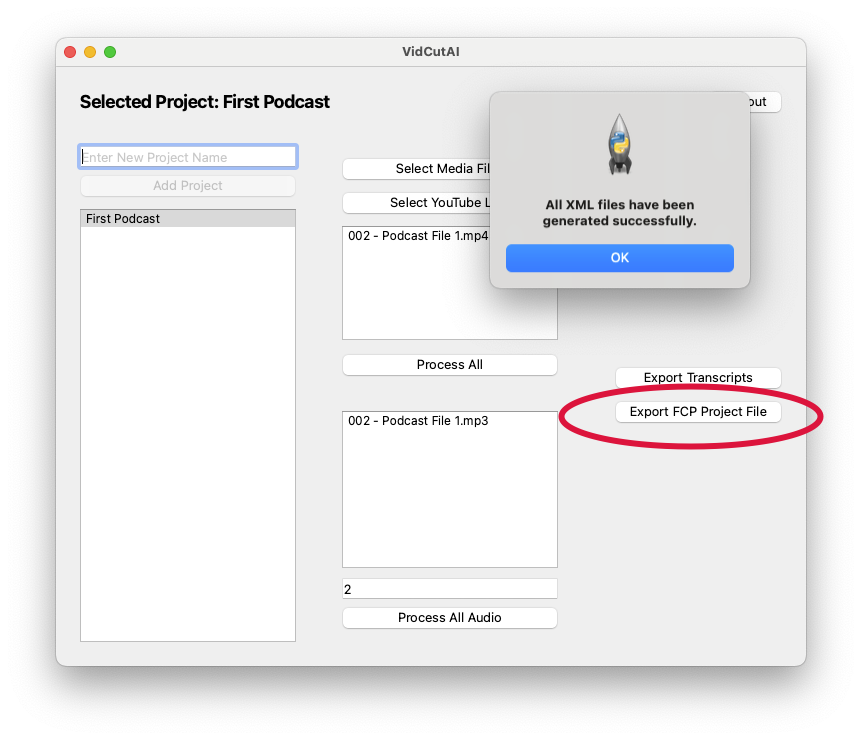

VidCut AI User Guide
Welcome to the VidCut AI user guide. This guide will walk you through signing up, downloading, and using VidCut AI to automate video editing, including transcription and speaker identification. Currently, VidCut AI requires Final Cut Pro for video editing automation, but we plan to add more integrations in future releases.
Summary of User Steps
Here’s a quick overview of the user steps to get started with VidCut AI:
- Sign Up for Beta Access and download the application.
- Login to the VidCut AI app with your credentials.
- Create a New Project and add video files for processing.
- Pre-Process the files to convert them to audio.
- Enter Speaker Count and start processing.
- Export the Final Cut Pro project file and import it into Final Cut Pro.
- Optionally, replace video tracks or export transcription for youtube captions.
1. Getting Started with VidCut AI
1.1 Sign Up for Beta Access
- Go to the VidCut AI website: nulite.org/vidcutai .
- Request Beta Access: Fill out the beta sign-up form and submit it.
- Receive Credentials: Once your request is approved, you’ll receive an email with your login credentials and a download link for the app (currently available for macOS).
Note: VidCut AI currently requires Final Cut Pro for video editing automation. We are actively working to support additional video editors and integrations in future updates.
1.2 Download and Login to the Application
- Download the App: Click the download link provided in your email.
- Open the App: Launch VidCut AI on your macOS device.
- Login: Enter your credentials on the Login Screen.
2. Project Setup
2.1 Creating a New Project
- Enter a Project Name: Type a name for your project in the top-left corner of the app.
- Create Project: Click the New Project button to initialize the project.
2.2 Adding Files to the Project
- Select Video Files: Use the file selection tool to choose the video files you want to process.
- Add Files: After selecting your files, confirm to add them to the project.
3. Pre-Processing Files
- Convert Video to Audio: Click the Pre-Process button to convert your video files to audio files. This step prepares the files for transcription and speaker identification.
- Wait for Conversion: Once converted, the app will notify you that your audio files are ready for processing.
Note: The pre-processing step is essential for converting video into a format that enables audio-based machine learning models for transcription and speaker identification.
4. Processing Files
4.1 Setting the Number of Speakers
- Speaker Count: Enter the number of speakers in the provided field (currently limited to 2 speakers for automated video editing).
- We plan to expand the maximum speaker count in future releases.
4.2 Start Processing
- Click Process: Once you’ve entered the speaker count, click the Process button to send the file to our cloud servers.
- Processing Information: This step uses our machine learning models to:
- Transcribe the audio.
- Identify speakers for video editing automation.
Beta Note: In the beta phase, server uptime may vary, which can cause processing delays. If processing fails, it could be due to temporary server inactivity. We aim to maintain consistent uptime during beta testing.
5. Exporting Final Cut Pro Project Files
Once your file processing is complete, VidCut AI provides export options to streamline your editing workflow in Final Cut Pro.
5.1 Exporting the Final Cut Pro File
- Choose Export: Select the Final Cut Pro Export option to create a project file compatible with Final Cut Pro.
Note: Each video file processed by VidCut AI will create a unique Final Cut Pro project file. Each project will contain a multi-clip track with speaker changes split across three tracks, enabling a clear visual distinction between speakers.
- Import to Final Cut Pro:
- Open the exported file, which will be in a folder next to your video file. This will automatically open in Final Cut Pro. **Read Note Below
- You’ll be prompted to choose a location to save the file.
- We recommend creating a new library for each group of exports to keep your projects organized.
**Note: There will be multiple project files. The two that you should use are one that ends in “-Edited” and one that ends in “-Edited-Flipped”. One of these will have the proper cuts for your final project.
5.2 Optional Video Replacement
- Multi-Angle Editing: VidCut AI exports a project file one video used in 3 video tracks, within a multi angle clip.
Here’s a YouTube guide for more information on multi angle clips: MultiCam Editing in FCP
-
Video Replacement: If you used multiple cameras/angles during recording, you can replace the additional tracks with alternate video footage in Final Cut Pro.
Tip: The exported project file currently uses a single video track with zoom-ins for each speaker. If you used two or three cameras, you can replace each track with your original multi-angle footage, creating a seamless multi-camera editing experience.
6. Exporting Transcription
6.1 Exporting the Text Transcription
- Text Export: VidCut AI includes an Export Transcription option, which generates a text transcript of your video.
- This transcription can be used for YouTube captions or other forms of closed captioning.
- Beta Warning: The transcription export feature is in early beta. You may experience minor issues or inaccuracies.
Future Feature: We plan to add direct captioning support in Final Cut Pro so that users can include transcription as captions directly within their video projects.
7. Known Beta Limitations
As VidCut AI is currently in beta, please note the following limitations and known issues:
- Final Cut Pro Requirement: At this stage, Final Cut Pro is required for all video editing automation.
- Limited Speaker Support: Automated video editing currently supports up to 2 speakers.
- Server Uptime: Server uptime may vary, so some processing requests may fail intermittently. We strive to maintain steady uptime but will address these issues as we transition out of beta.
- Limited Editing Flexibility: Currently, the system generates three tracks by default for speaker separation. Additional track flexibility will be added in future versions.
Future Enhancements
VidCut AI has an ambitious roadmap to improve and expand its capabilities. Future versions aim to include:
- Additional Video Editor Integrations: Compatibility with editing software beyond Final Cut Pro.
- Expanded Speaker Support: Ability to handle projects with more than two speakers.
- Direct Captioning Support in Final Cut Pro: Integrated captioning functionality within Final Cut Pro.
- Enhanced Multi-Camera Support: Support for more flexible multi-camera editing beyond basic track replacement.